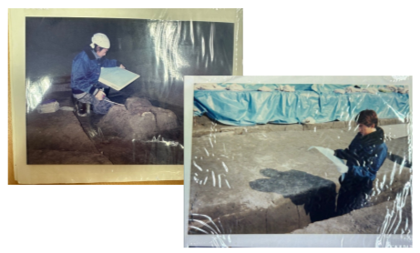

교수님의 대학시절의 이야기를 들어보았습니다.
'고고학'을 전공한 이유는 무엇일까요?
만화였어요. 일본 만화 중에 ‘마스터 키튼’이라는 만화를 알고 계신가요?
고고학이 주제인 만화인데 유럽이나 그리스의 고고학,
그리고 박물관 같은 이야기를 보면서 고등학생 때 나도 이런 일을 해보고 싶다고 생각한 계기가 되었죠.
교토는 어느 대학이든 역사학과나 고고학과가 있어요. 그래서 나중에 내가 살아갈 곳에 가서 공부를 해보고 싶다고 생각했죠.
대학에 가고 나서 실제로 아르바이트를 하면서 일을 접해보기 시작했어요.
현장과 이상은 달랐지만 남들이 쉽게 할 수 있는 일을 직접 겪어봄으로써 성장해 나가는 느낌이 좋았어요.
처음 어른이 되었을 때의 기분은 어떠셨나요?
한국에서처럼 1월 1일 오전 00시에 술, 담배가 전부 허용되는 것에 비해 저는 고등학교 시절
조금 즐긴 적이 있어서 군대에 가야하거나 하지도 않았기 때문에 해방감이나 자유로워졌다고
느끼진 않았어요.
인생에 있어 영향을 받은 인물이 있을까요?
야구를 굉장히 좋아하거든요. 자주 보기도 하는데 ‘노모 히데요’라는 선수가 있어요.
한국의 박찬호랑 같은 시기에 메이저리그 LA 다져스에 갔던 일본인 선수거든요. 아마 저와 비슷한 나이에 메이저에 갔던 것으로 기억하는데,
일본에서는 “일본인은 메이저리그에서 성공할 수 없다” “얼마 못 가서 돌아올 것이다” 했는데 거기에 반발하면서 노력해서 성공을 거둔 모습을 봤어요.
저도 자극을 받아 “나도 저 사람처럼 해외에서 힘내보자”라는 식으로 생각했던 것 같아요. ‘히데요’라는 이름이 일본어로 ‘영웅’이랑 똑 같은 한자를 쓰는데
말 그대로 당시 저에게 있어서 히어로 같은 존재예요.
어떤 대학생활을 보내셨나요?
대학생 1학년부터 매일 8천엔 정도 받는 유적 발굴 아르바이트를 했어요. 번 돈으로 파칭코도 가보고 바로 편의점에서 아르바이트를 했어요.
아침, 낮, 밤 전부 아르바이트를 했고 빈 시간에는 학교에 갔던 느낌입니다. 레포트만 제때 제출하고 노트를 빌린다든지 해서 시험을 치면 됐기 때문에 일을 하면서 공부했어요.
유적발굴 자체에 학과 수업 공부가 되었고 장래 직장에도 도움이 되었기 때문에 돈도 궁하지 않던 자유로운 시간이었어요.

대학생활을 하면서 기억에 남는 추억은 무엇인가요?
졸업논문과 관련된 에피소드가 가장 기억에 남아요. 당시 컴퓨터를 처음 사서 원고 용지 세팅을 하고 글을 썼는데 마지막 한 줄의 설정을 잘못해서
쓰면 쓸수록 지워지는 일이 발생했죠. 총 50장을 썼어야 했는데 계속 지워지다 보니까 날이 저물고 교내 도서관을 폐관하여 전기가 전부 꺼져서 결국 가로등 밑에서 썼어요.
꽤 늦은 새벽이 되어버렸지만 어떻게든 졸업하기 위해 교수님 우편함에 넣어두었습니다. 마감일이 당일까지여서 언제 내는지는 중요하지 않았어요.
인생에서 가장 큰 터닝포인트가 있으신가요?
오토바이를 타다가 큰 사고가 난 적이 있어요. 거의 죽을 뻔 했어요. 대학교 4학년 때 일본에 있을 때의 일인데, 유적발굴 일을 하고 돌아가던 중,
밤이 늦었고 많이 어두워졌으니 빨리 집에 가려고 했는데 반대편에서 차가 오는 바람에 쾅 하고 부딪혔죠. 말 그래도 공중에 붕 떠서 ‘떨어진다’는 생각을 했어요.
주마등이라는 경험을 한 뒤 헬맷 덕분에 크게 다치지는 않았지만 문득 당시에 한 번 죽었다고 생각하면, 나저미는 자유롭게 살아도 되지 않을까?라는 생각을 했어요.
어떤 힘든 일이 생기거나 할 때에도 뭐 죽는 것보다 낫지 않을까, 한 번 끝난 인생이라고 생각하면 괜찮아져요. 지금 잘 살아있으니까, 결국 살아돌아왔으니까 하고
낙천적인 사고방식을 갖게 된 것 같아요. 그냥 좋아하는 거, 하고 싶은 걸 하자고 생각한 계기가 되었죠.